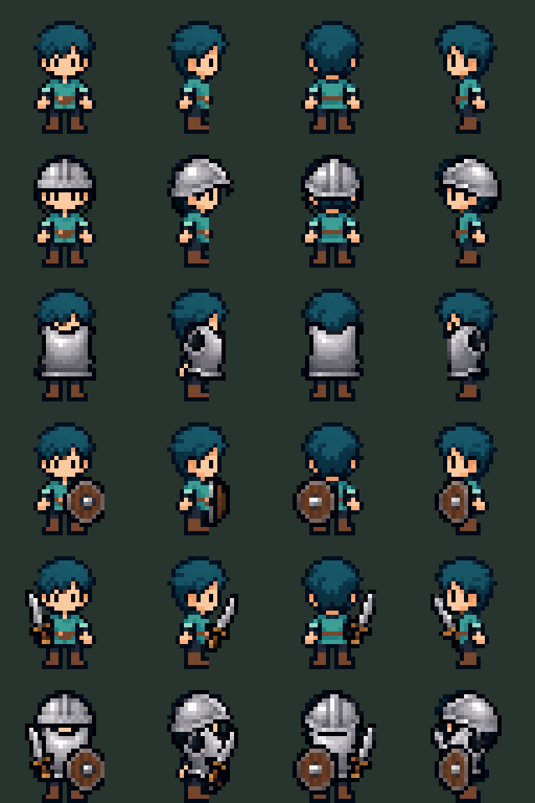

Prueba rechazada como equipo terminado. La coraza fue agrandada/desplazada por el generador y tapa el rostro. Las demás piezas requieren anclas de mano y máscaras de oclusión. Se conserva la prueba para revisar los defectos.
Filas: base, casco, coraza, escudo, espada, combinación completa. Columnas: frente, derecha, espalda, izquierda.

Manifest, checks y README describen transformaciones y límites.